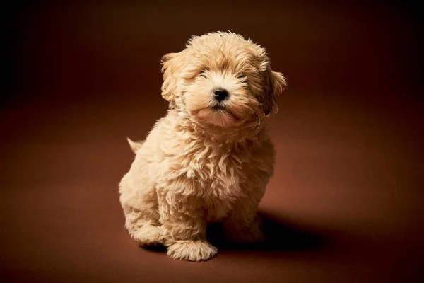
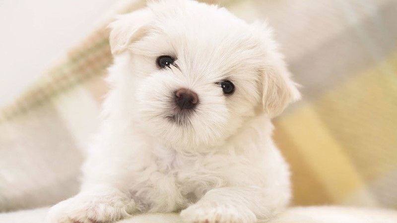
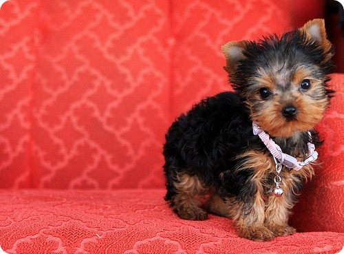

Aflați mai multe despre rasele noastre de câini. Fiecare rasă este specială și se potriveste diferitelor tipuri de familii.

Maltipoo – un cățeluș adorabil, inteligent și afectuos, rezultat din încrucișarea dintre Bichon Maltez și Pudel. Este prietenos, jucăuș, ușor de dresat și ideal pentru familii sau viața de apartament datorită dimensiunii sale mici și naturii blânde.

Bichon Maltez - este un câine mic, curajos și plin de energie, cunoscut pentru blana sa lungă și mătăsoasă. Este devotat, inteligent și perfect pentru companie, adaptându-se bine vieții în apartament.

Yorkshire - este un câine de talie mică, elegant și afectuos, recunoscut pentru blana sa albă, lungă și mătăsoasă. Este un companion loial, calm și inteligent, ideal pentru viața de apartament și familii care caută un prieten devotat.